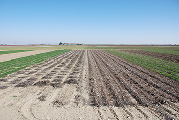

Conservation tillage
Proper tillage mechanisms hold as one of the most sustainable ways of avoiding soil quality decline. This is otherwise known as conservation tillage, which means tillage mechanisms targeted at making very minimal changes to the soil’s natural condition and at the same time improving the soil’s productivity. Examples include leaving the previous year’s crop residue on the surface to shield the soil from erosion and avoiding poor tillage methods such as deep plowing.